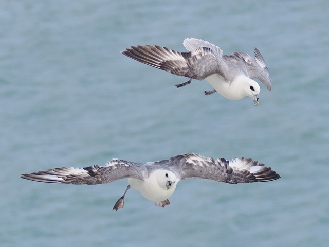

Northern Fulmar
Fulmarus glacialis
Order: Procellariiformes
Family: Procellariidae

White tubenose with a grey back, shaped like a cross between a pigeon and a gull. Remarkably long-lived; the mean life expectancy is more than 30 years, but does not breed until around 9 years old. Found at sea or breeding on cliffs. Could be seen arcing and wheeling in the wind currents, sometimes struggling to land.